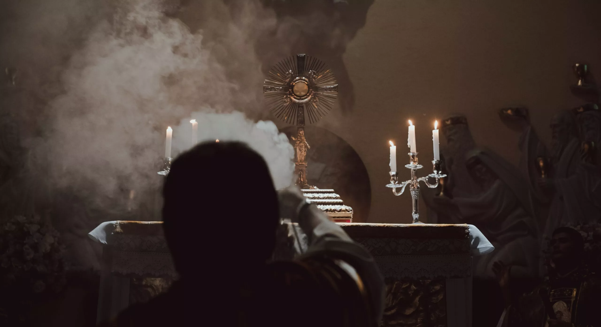

(10 min. read)
Sometimes when I walk into a church it’s like my soul is knocked out of my body like that moment in Dr Strange. Something about the church makes me momentarily forget what's happening in my life and I realize why I'm here: God is so good. When this happens my body feels like it actually has some physical reaction.

Praise God for the feeling of a still church. This wide open space feels doesn't feel like any other building. The church is open, but not dry and cracky and like a gym. Walking down the aisle I can actually hear my footsteps, this is not acoustically smothered like a theater. The space echoes, but not because it's empty, but the history. I can feel all the faithful who worshipped here before me, and all the faithful coming after. This isn't dusty, or dirty like a warehouse, this space is ageless. My steps are just one part of this unbroken chain, echoing through time.
And the incense. Oh the incense. My grandpa smelled this same scent when he was my age, and his grandpa. That's the smell that would bring them into a prayerful state to. The specific incense formula might change, but not the feeling. Hundreds and hundreds of years Christians have been brought to God by the same smell of incense I am feeling now.

Picture the thurible; you know what a thurible is, it's the big thing on a long silver chain. Incense is burned inside it. I think they look cool. At adoration the priest kneels down before God, fills the thurible with incense, and flings the thurible forward to worship God. The thurible swings and billows out clouds. It traces arcs through the air, throwing smoke like an impressionist painter, splashing wildly and erratically. As it throws itself, the thurible shouts “MORE TO YOU GOD! MORE TO YOU!” It gives itself fully in its worship. Every swing shouts and exhales. “MORE GLORY TO YOU GOD OF HOSTS!” The thurible's worship is full throated, without restraint, nothing is held back. And when it’s finished it leaves behind its masterwork. Every arc it threw remains, filling the space with a third dimension. A heavy blanket of smoke catches shafts of light, enthroning God. The image the thurible leaves is striking, there's nothing in our mundane life that looks quite like it. The viewer is drawn out of the mundane world into the divine.

While the smoke covers and obfuscates, it strangely focuses your gaze. You see less with your earthly eyes, so you must look deeper. The incense calls to see beyond the surface. Christ says "Cast out into deep water." Let your nets down deeper. There’s a strong surging current underneath the mundane. Let down your nets and feel this pull, strong and powerful. Your nets will feel near tearing with the power felt under the surface.
The thurible is passionate, artful. Some of the greatest christian art ever produced is the temporary smoke of a thurible. It’s transporting. Its performance is lively and meaningful, deep and ancient. You see how God has been found inside incense since before Christianity. Ancient Judaism threw incense to find God, as did ancient pagan religions. Incense has always had the power to bring humans to a place where they seek and grasp for that eternal divinity.


Many modern churches have opted to replace the ancient thurible with the modern smoke machine. Remove the outdated annoying expensive thing for something more "modern". They think they can replace the pathos, the romance, the history with a plastic, unfeeling, mechanical smoke machine. The thurible is human, giving of itself via the swings of a priest. This clockwork could never replace the sublime worship of a thurible. Do they believe that C3H8O2 can replace incense? Remember the Tower of Babel? Humans in their vainglory try to reach heaven with man-made machinery. Incense was given and ordained by God himself for worship. Who are you lowly humans to use your glycerine golem?

The book of Daniel gives us verses praising God by reciting everything that gives him glory.
All you winds, bless the Lord,
Fire and heat, bless the Lord,
Cold and chill, bless the Lord,
Mountains and hills, bless the Lord,
Seas and rivers, bless the Lord,
All you water creatures, bless the Lord,
All you birds of the air, bless the Lord,
All you beasts, wild and tame, bless the Lord,

The natural world was created perfect by God. Nature, without the compromising force of humanity’s sinfulness, is our example of what perfect worship looks like. A deer drinks from a stream, scambers into the woods. A fish nibbles algae from a rock, and swims along. Wind blows and leaves fall from trees. Wolves howl in the night. There is no other way they could exist. They simple do. They repeat their routine, and in doing so God is honored.
Churches are designed to emulate nature. Tall columns rise up like trees, the circular rose window resembles the sun, the open, spacious interiors letting you see great distances, they feel more like a field than a building. There's nothing strictly utilitarian about it's openness like a warehouse, it exists like as an extravagant show of beauty. Look outside at all the species of birds and plants, like nature is extravagant so are churches. And look at the walls, see all the spirals and curves. This is not hard angles of civilization, but flowing and sometimes thorny like flowers. Try walking through a city, and on your walk enter a church. The church feels nothing like the city.
Humans build churches because we are creative. We aren't sinless like animals, but we have an ability to create. When God made us in his image and called us "very good" not just because of our free will, but our ability to create as he did. We share in God's ability to make good things. As God made the oceans we made society. As He set the stars the sky, we made laws. As he made every living thing we made tools. And, of course, we made churches. And we made those churches to resemble nature. Of course we would, what else would we our art on. But you know what reader? You know what reminds me of nature? (image) A deer doesn't have a powerful will of its own, it simply does its day and honors God. Same with fish, trees, wind, gravity, fire, frost, mountains, and hills. They do not take center stage, they just exist. You know what a smoke machine does? (image)
Now you see where I've been going with all this. Did I trick you with that brutal takedown of smoke machines earlier? I’m kinda proud of that one. But really, if our churches are a forest, shouldn't they have a bird just chirping in the background giving glory to God. I like both the smoke machine and the thurible, but they feel different. One is passionate, the other is humble. It’s great that humanity can use its creativity to worship God in new ways. The smoke machine doesn’t have the history of the thurible, but it serves its own unique role the thurible never could, to exist unseen in the background, simply doing its role. Strangely, the smoke machine’s role feels more natural.

I guess I should give a little more of a conclusion. (finish)